Transitolândia · DER-DF / Convergint · jogo 2 de 5
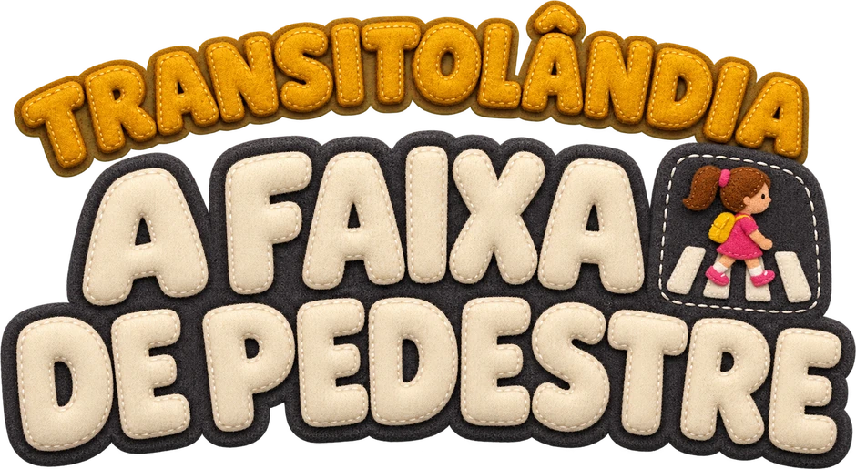
Na faixa sem semáforo, quem para o trânsito é o pedestre: ele faz o sinal de vida, espera todos os veículos pararem, inclusive a bicicleta, e atravessa com calma.
Roteiro · jogabilidade · arte · animação · vozes · vídeo
01 · O ponto de partida
O roteiro do DER
A mesma turma, uma parada adiante
O passeio continua na mesma rua de Transitolândia, agora numa faixa sem semáforo. O sinal de vida, que no Semáforo é o erro, aqui é o gesto certo.
Seis ideias que não podiam faltar
o sinal de vidachegar perto da faixa esperar na calçadaesperar TODOS pararem a bicicleta é veículoolhar e atravessar com calma
02 · O desafio
Um gesto do corpo, feito com o dedo.
O centro do roteiro é um movimento do braço, e no totem a criança precisava fazer esse movimento com o dedo.
03 · Como o jogo pensa
As regras comuns aos totens, e o gesto deste jogo
O gesto da Faixa
Arrastar para cima e para baixo imita o sinal de vida, e a criança pratica o movimento enquanto joga.
Ver antes de fazer
O quiz mostra os dois gestos em vídeo. Não é preciso ler para acertar.
Errar não trava
Tocar na rua ou no tchau explica o porquê e deixa tentar de novo. Os erros só aparecem nas estrelas.
O erro é da Dona Pressa
Ela é quem quase atravessa com a bicicleta chegando. A criança aprende sem ser corrigida.
Três canais por ideia
Voz, balão escrito e cartão-resumo dizem a mesma coisa.
O Lumi não se adianta
Ele só diz “o motorista parou” e “a ciclista parou” depois que eles param de fato, antes da linha.
04 · Do roteiro ao jogo
Cada frase do roteiro virou uma etapa
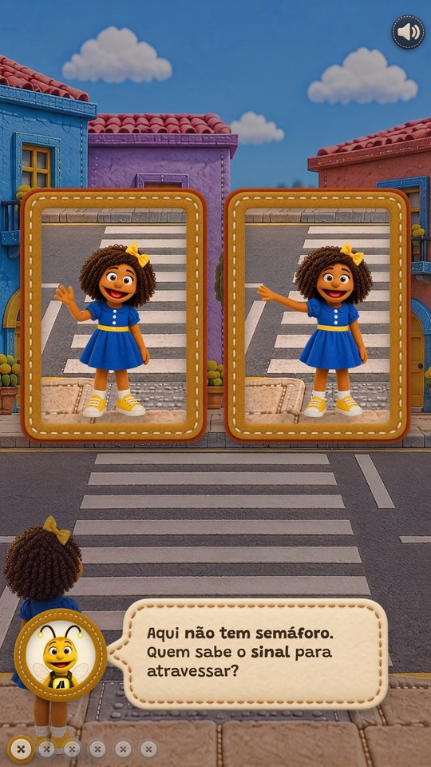
Quem sabe o sinal?
escolhe o gesto certo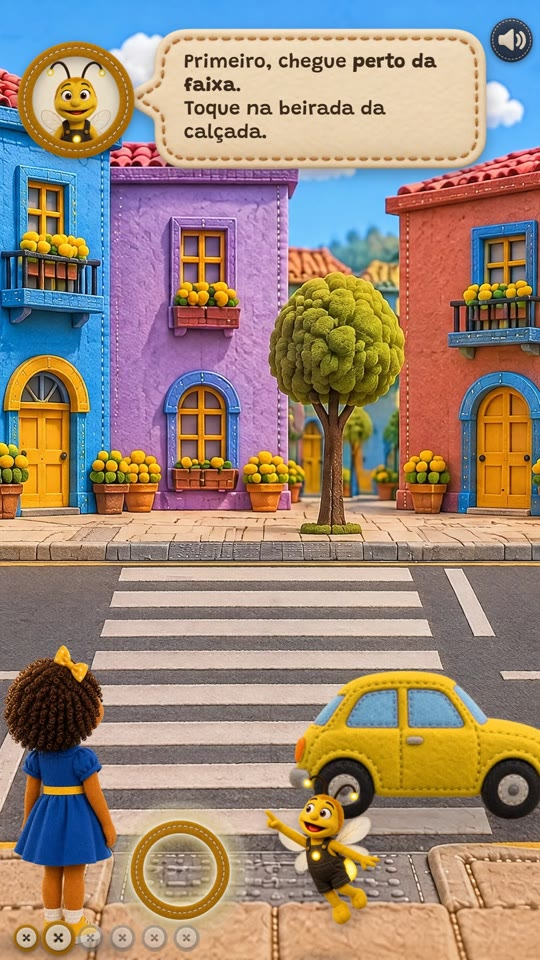
Perto da faixa
toca na beirada da calçada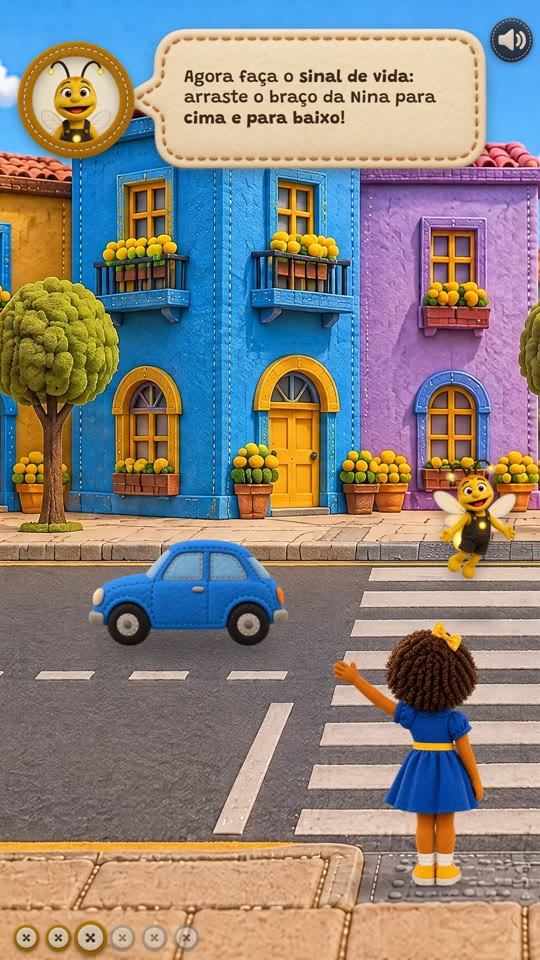
O sinal de vida
arrasta para cima e para baixo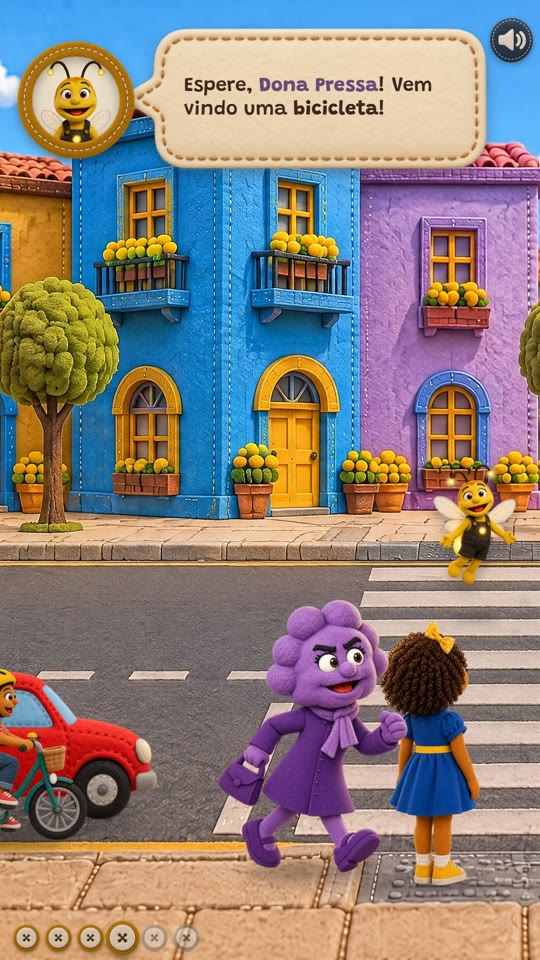
A bicicleta também
faz o sinal para a ciclista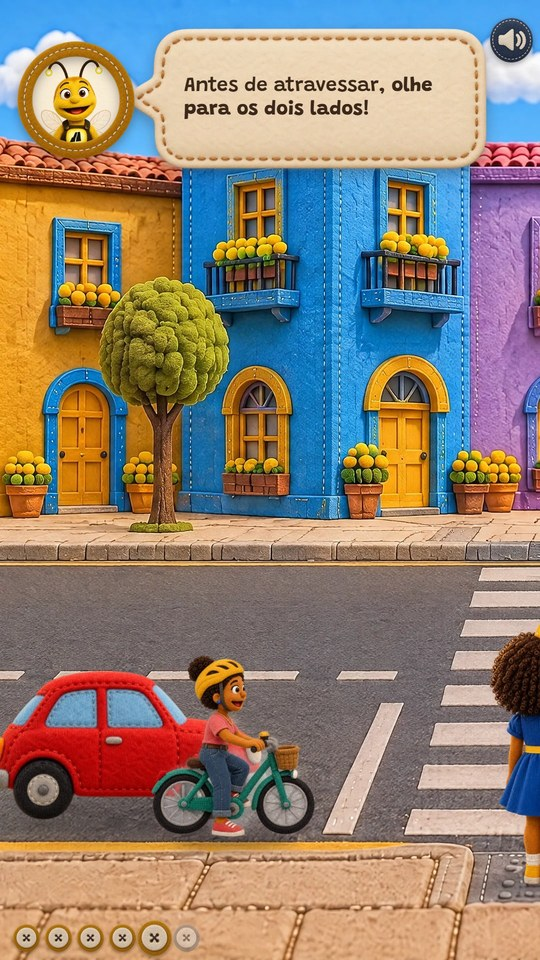
Olhar para os dois lados
toca nas duas setas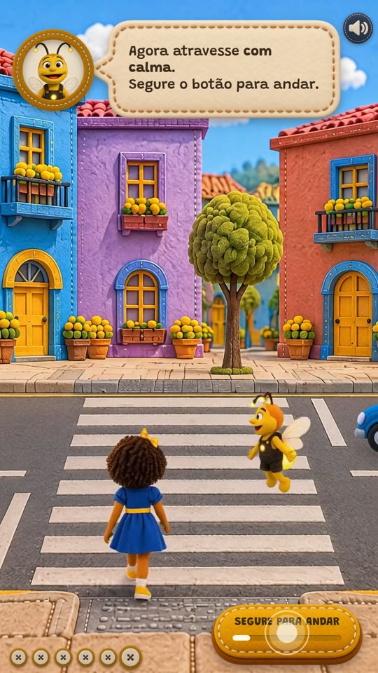
Com calma
segura para andarUma partida sem erros dura 87 segundos (o teto era 120), e as etapas seguem a ordem da travessia: chegar, sinalizar, esperar todos, olhar, atravessar.
Etapa 1 · roteiro §1 0:03 – 0:16
Quem sabe o sinal?
…pergunte quem sabe atravessar na faixa de pedestre. Note que alguns farão o “sinal de vida”. Enfatize quem estiver correto…
- “Aqui não tem semáforo. Quem sabe o sinal para atravessar?”
- Dois quadros de feltro, cada um com a Nina em vídeo: um tchau e o sinal de vida.
- Acertou: o cartão mostra o nome e o gesto. Errou: “Esse é o tchau! Tente o outro.”
Por quêA pergunta do educador virou uma escolha entre dois vídeos, que a criança resolve olhando o movimento, sem precisar ler.
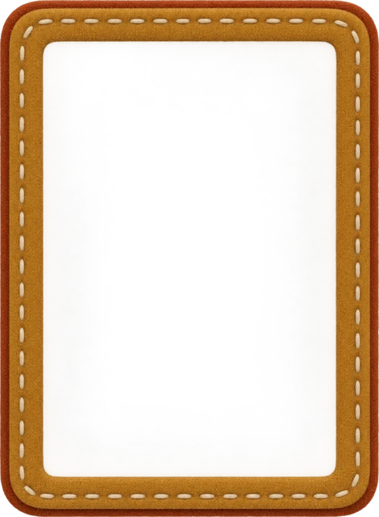
Etapa 2 · roteiro §2 0:16 – 0:25
Chegue perto da faixa
…primeiro devemos nos aproximar da faixa…
- A Nina começa no meio da calçada. A criança toca na beirada, sobre o piso tátil, e ela anda até lá.
- Tocar na pista não vale: “Na rua não! Espere na calçada.”
- “Isso! Aqui a gente espera, na calçada.”
Por quêO lugar certo de esperar é a primeira coisa a aprender: perto o bastante para ser vista, sem pisar na rua.
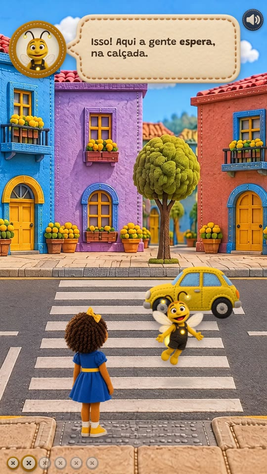
Etapa 3 · roteiro §1 e §2 0:25 – 0:37
O sinal de vida
…fazer o “sinal de vida” para mostrar aos motoristas que queremos atravessar… balançando o braço para cima e para baixo.
- A câmera vira para quem vem pela mão de cá: a Nina fica de lado, com o braço apontado para o trânsito.
- A criança arrasta para cima e para baixo; o braço acompanha o dedo e o anel enche a cada balanço.
- O carro freia e para antes da linha. Só então o Lumi diz: “Olhe! O motorista viu o sinal e parou.”
Por quêÉ o único gesto do jogo que imita um movimento do corpo, e a criança sai do totem sabendo fazê-lo na rua.
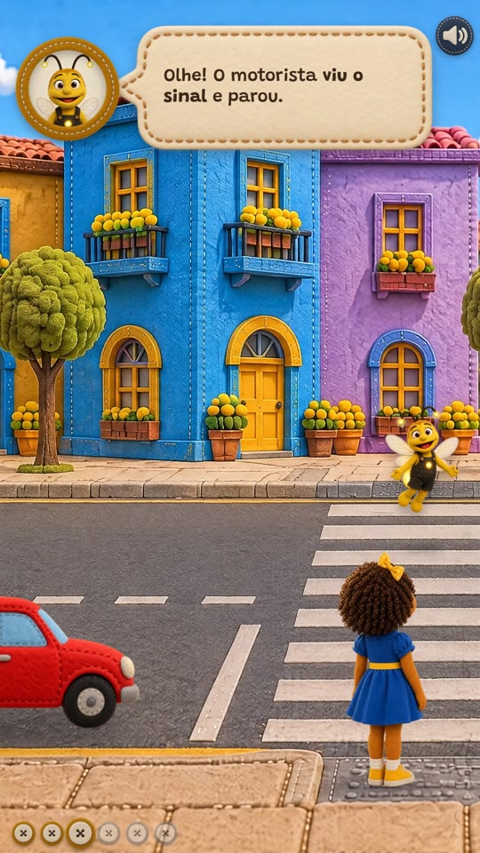
Etapa 4 · roteiro §2 0:37 – 0:59
A bicicleta também é um veículo
Relembrar que a bicicleta também é um veículo e que ela também precisa estar parada para que os pedestres possam atravessar em segurança.
- A Dona Pressa chega: “Os carros pararam! Vou atravessar correndo!”
- Uma ciclista aparece atrás do carro parado, junto ao meio-fio. “Espere, Dona Pressa!”
- A criança faz o sinal de novo e a ciclista para na linha, com o pé no chão.
Por quêNa rua, um veículo parado pode esconder outro que vem ao lado. Por isso a criança aprende a perguntar: todos pararam?
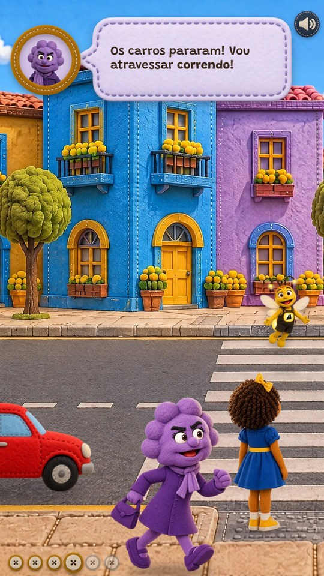
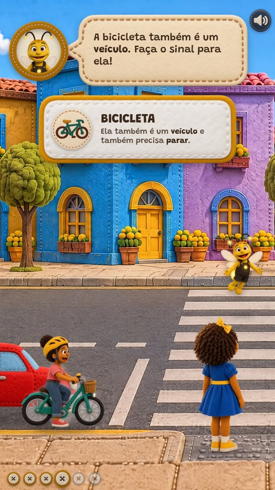
Etapa 5 · roteiro §2 0:59 – 1:14
Olhar para os dois lados
…olhar para os dois lados para verificar se não está vindo nenhum veículo e se todos pararam…
- Cada seta desliza a câmera sobre a mesma rua.
- À esquerda, o carro e a bicicleta parados; à direita, o carro da outra mão e a placa de passagem de pedestres.
- “Todos parados: o carro, a bicicleta e o carro da outra mão.”
Por quêAo olhar para os lados, a criança confere quem parou, um por um, antes de pisar na faixa.
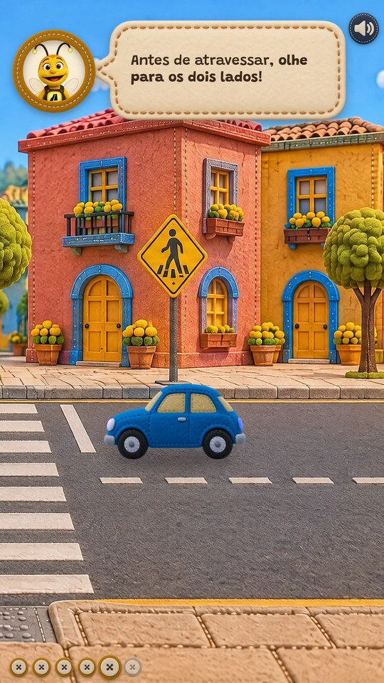
Etapa 6 · roteiro §2 e §3 1:14 – 1:30
Atravessar com calma
…e só então podemos atravessar com calma. Atravesse com a turma até todos estarem na calçada novamente e continue o passeio…
- Com “Segure para andar”, a Nina e o Lumi atravessam enquanto o dedo segura. Soltar pausa, e o passo é sempre o mesmo.
- Cartão: “Na faixa a gente anda, sem correr.”
- O gancho do roteiro: “Vamos continuar o passeio até a travessia sem faixa!”
Por quêA travessia tem velocidade fixa e não existe botão de correr, então a Nina sempre chega andando, com calma.
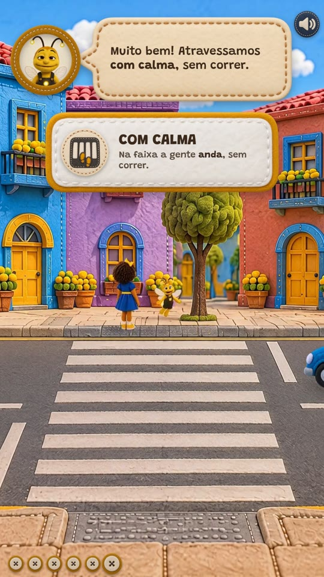
05 · O fim da partida
O final retoma o roteiro inteiro
- Chegue perto da faixa e espere na calçada.
- Faça o sinal de vida: braço esticado, para cima e para baixo.
- Espere todos os veículos pararem. A bicicleta também!
- Antes de atravessar, olhe para os dois lados.
- Atravesse com calma, sem correr.
A Nina e o Lumi comemoram na calçada de lá, ao lado da placa de passagem de pedestres. Em 25 segundos o totem volta sozinho para a abertura.
06 · Elenco
Os mesmos personagens, e uma ciclista

Lumi · o guia
Leva a logo do DER no peito. Explica, aponta onde tocar e fala com a mesma voz em todos os totens.
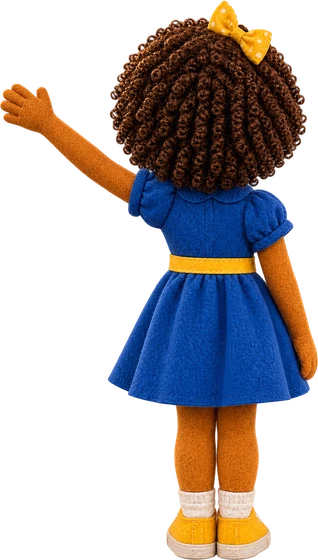
Nina · a protagonista
Aqui faz o sinal de vida, de costas e de frente, e o tchau do quiz.
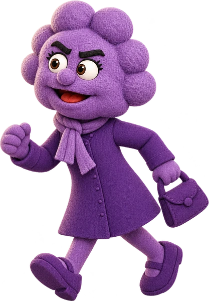
Dona Pressa · o erro comum
Vê os carros parados e quer correr, sem conferir se todos pararam.
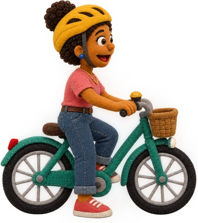
A ciclista · o veículo esquecido
É a Ana, personagem do projeto, de capacete, pedalando e parada com o pé no chão.
07 · Estética
O mesmo feltro e o mesmo kit em todos os totens
Balão, cartão, botão, anel, seta, estrela e faixa são os mesmos em todos os totens, para que os jogos tenham a mesma cara. Próprios da Faixa são só o logo, os ícones dos cartões e o quadro em retrato do quiz.
Os carros de sete cores são os da cidade inteira. A ciclista e as poses da Nina foram geradas a partir das folhas oficiais.
Peças da Faixa
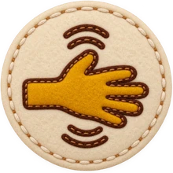
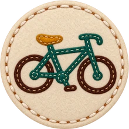
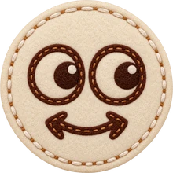
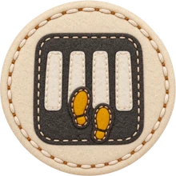
Kit comum aos totens
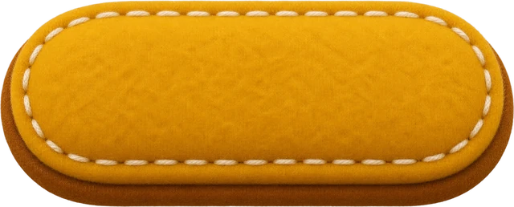


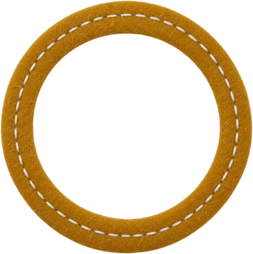
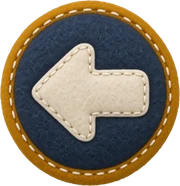

08 · O mundo
Uma faixa no meio da quadra, sem semáforo
olhando à esquerda
virada para o trânsito
olhando à direita
A mesma rua de feltro, um pouco adiante: casas diferentes, a faixa no centro e a placa de passagem de pedestres na calçada de lá.
Com a faixa centrada, a linha de retenção da mão de cá fica fora da tela. Por isso, no sinal de vida, a câmera desliza para a esquerda: a Nina fica à direita, com o braço apontado para quem vem.
09 · Rigor
Trânsito certo, nos detalhes
Faixa com listras paralelas ao eixo da via e rampa com piso tátil nas duas pontas.
Nenhum semáforo: a faixa sem sinal, com a placa de advertência de passagem de pedestres.
Mão dupla: uma linha de retenção por sentido, antes da faixa.
Os veículos só param depois do sinal de vida, e param antes da linha, nunca sobre a faixa.
Quem já passou da linha segue: veículo não dá ré. O próximo que chega é o que para.
A bicicleta anda junto ao meio-fio, na mão de cá, e para na mesma linha.
A Nina espera na calçada, nunca na pista.
carro e bicicleta
antes da linha
o carro da outra mão
na linha dele
10 · Voz e som
Vozes gravadas, com emoção em cada frase
Lumi
A mesma voz em todos os totens · 18 falas
Dona Pressa
Senhora idosa, apressada, trêmula e rouca · 2 falas
Efeitos sonoros
Sons de mundo próprios da Faixa: a campainha da bicicleta e o braço cortando o ar a cada balanço do sinal de vida. Os sons de sistema são os mesmos em todos os totens.
11 · A experiência final
Uma partida completa
Gravada no próprio jogo, em 1080 × 1920, com as vozes e os efeitos. O anel branco mostra onde o dedo tocou e arrastou.
Transitolândia · DER-DF / Convergint
Obrigado!
Na faixa: chegar perto, fazer o sinal de vida, esperar todos pararem, inclusive a bicicleta, olhar e atravessar com calma.